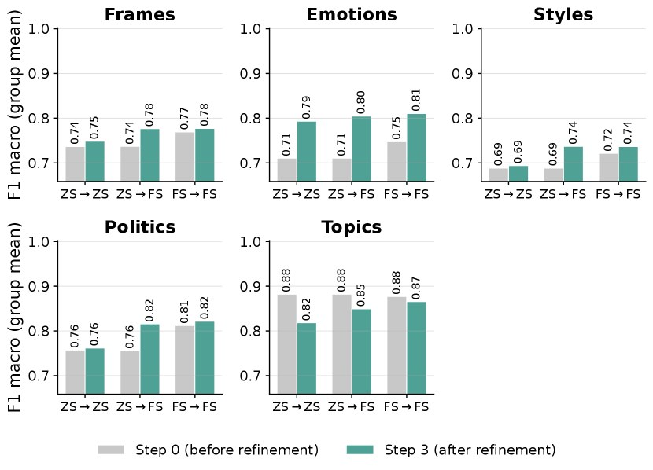
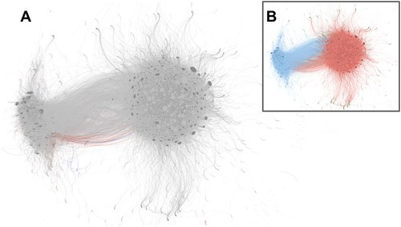
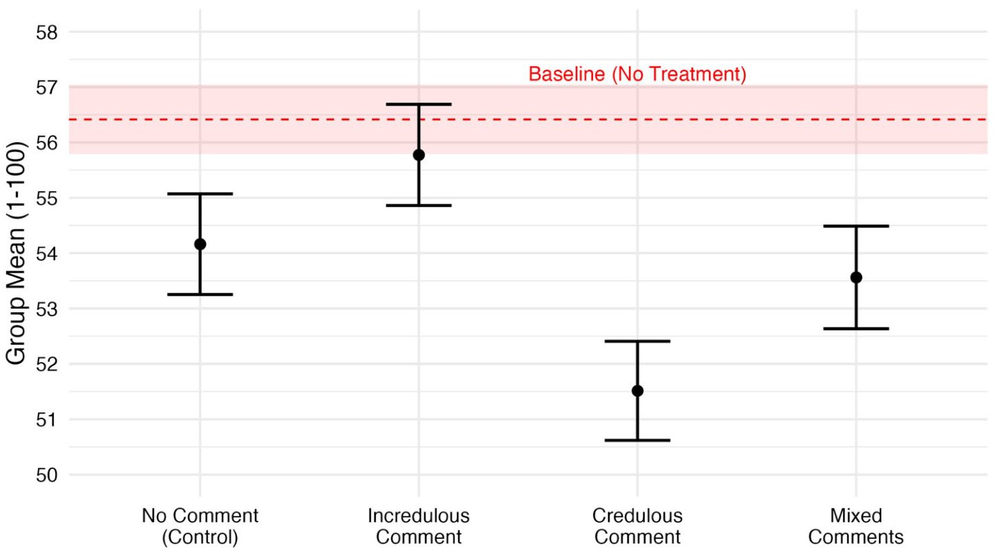
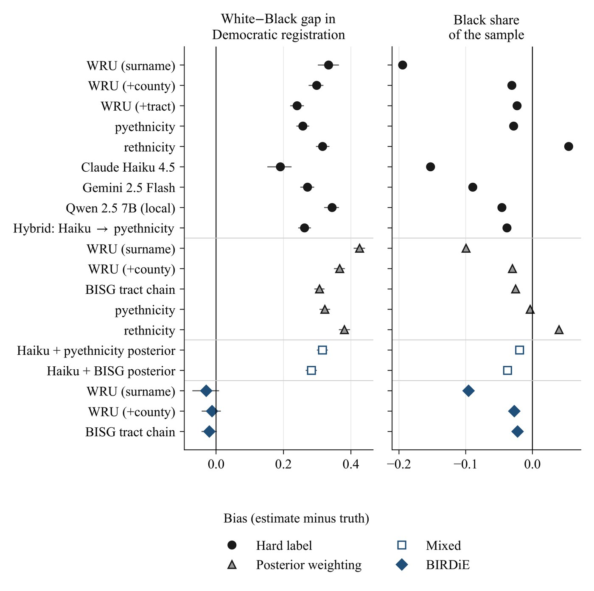
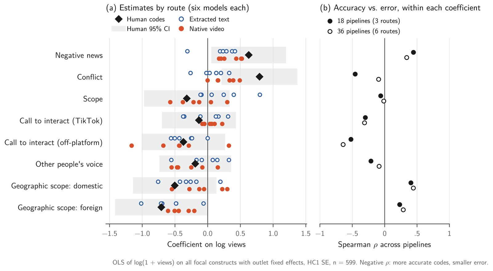
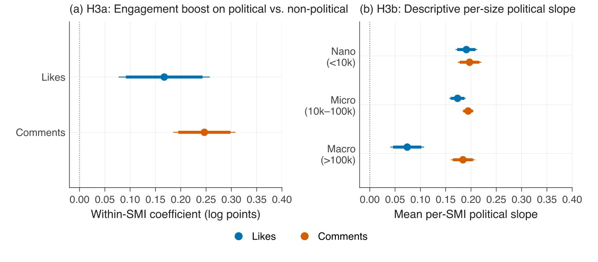

I am a Postdoctoral Scholar in the University of Zurich's Department of Communication & Media Research (IKMZ). My research is focused on understanding how digital technologies are used to influence the public. This includes research into novel forms of political persuasion, such as disinformation and LLM-generated propaganda, as well as work developing interventions to mitigate their impact. My work draws on mixed and computational methods, including algorithmic auditing, machine learning–assisted classification, large-n text analysis, and survey and field experiments, with research projects spanning the United States, Europe, and sub-Saharan Africa.
Previously, I was a Research Assistant Professor at Clemson University's Media Forensics Hub. I received my PhD from the University of Washington. I am the consulting scientist for the International Panel on the Information Environment (IPIE)'s Indexing Panel, an affiliate of the Center for Information, Technology, and Public Life (CITAP), and a member of both the Coalition for Independent Technology Research (CITR) and DSI Digital Publics communities.
While Large Language Models (LLMs) have transformed content analysis, their ability to self-correct to achieve higher agreement with human coders remains contested. Recent evidence suggests LLMs fail to self-correct on reasoning tasks, but it is unclear if this limitation applies to classification, where the goal is maximizing overlap with human ground truth. We investigate iterative self-refinement, a pipeline where a model generates an initial classification, critiques its own output, and generates a final refined prediction. We test this across 14 variables (spanning framing, emotions, styles, politics, and topics) using a smaller, cost-effective model (Gemini 2 Flash) by systematically isolating the effects of codebooks versus few-shot examples. Results demonstrate a clear trade-off: refinement significantly boosts human alignment for complex, low-baseline constructs but degrades performance on simple, high-baseline tasks. Notably, a smaller model using refinement matches the accuracy of state-of-the-art reasoning models (Gemini 3 Flash) on complex tasks at a lower cost. These findings establish boundary conditions for self-correction, showing that external structure and task complexity jointly determine when refinement improves data quality.

Fact-checking has been promoted as a key method for combating political misinformation. Comparing the spread of election-related misinformation narratives along with their relevant political fact-checks, this study provides the most comprehensive assessment to date of the real-world limitations faced by political fact-checking efforts. In conceptualizing these barriers to impact, this study extends recent work from laboratory and experimental settings to the wider online information ecosystem present during the 2022 U.S. midterm elections. We find that fact-checks as currently developed and distributed are severely inhibited by constraints on their i. coverage, ii. speed, and iii. reach, which we link to fundamental challenges to the production economies and information asymmetries that differentiate corrections from misinformation. Specifically, we provide evidence that fewer than half of all prominent election-related misinformation narratives were fact-checked. Within the subset of fact-checked claims, we find that the median fact-check was released a full four days after the initial appearance of a narrative. Using network analysis to estimate user partisanship and dynamics of information spread, we find additional evidence that fact-checks make up less than 1.2% of narrative conversations and that even when shared, fact-checks are nearly always shared within, rather than between, partisan communities. Finally, we provide empirical evidence which runs contrary to the assumption that fact-checking is politically biased. Through this assessment of the real-world influence of fact-checking efforts, our findings underscore how limitations in coverage, speed, and reach necessitate further examination of the use of fact-checks as the primary method for combating political misinformation.

Does social commentary influence the effects of political deepfakes? To answer this question, we rely on a survey experiment based in Kenya ( N = 7,000). The experiment saw respondents view a generated clip of presidential candidates discussing their role in a fabricated corruption scheme coupled with embedded comments expressing varied levels of skepticism. In line with prior work, we first show that social commentary shapes how audiences interpret media. Next, we go beyond this initial finding to examine how commentary in social environments can shape the perceived authenticity of entire videos by integrating a novel survey instrument aimed at improving the ecological validity of our experimental design. Using this instrument, we find that comments which failed to remark on the synthetic origins of the video reduced support for the politician, while skeptical comments partially restored it. Partisanship also mattered, as respondents more readily dismissed deepfakes targeting candidates they supported compared to opposing candidates. Our findings highlight how the social context in which users view AI-generated disinformation can reshape audience perceptions, particularly in contexts that lack sufficient resources to maintain effective moderation systems. We conclude that audience-driven “collective sensemaking” can critically alter the influence of deepfakes, introducing both challenges and opportunities for the development of countermeasures for mitigating the influence of audio-visual disinformation. Our discussion emphasizes the need for research on deepfakes and related forms of multi-modal AI-generated content to take socio-political contexts into account when considering the direction of influence and potential for harm.

Researchers routinely infer gender, race, and ethnicity from names, yet the standard tools used for this task misclassify the groups that diversity research most needs to measure. Large language models (LLMs) have been proposed as a remedy because they label diverse names accurately. We ask whether that accuracy carries over to the estimates researchers report. Across 10,000 Chinese names, 19,998 North Carolina voters with self-reported race, and 300 political science authors with human reference codes, we compare three LLMs with seven traditional tools and link the voter sample to party registration and age. Selective labeling explains part of the LLMs' accuracy advantage. Claude Haiku labels half of the voters, and a traditional tool limited to its most confident half is more accurate. Hard labels from every tool understate the White–Black gap in Democratic registration by 36% to 65%, while BIRDiE estimation on BISG posteriors comes within 0.03 of it. Haiku's missing labels select on age, inflating the age gap by six years. Combined with BISG, LLM answers sharpen individual labels without a demonstrated gain in BIRDiE accuracy. Classifiers should be judged by the estimates they produce, including the consequences of missing labels.

Multimodal large language models (MLLMs) allow social scientists to analyze video at scale, but researchers must decide which parts of a video to provide as input. We use the term representation validity to examine how text, audio, video, and combined inputs affect measurement and subsequent analysis. We compare input representations across six open-weight MLLMs and three human-annotated video datasets. No representation consistently performs best. On seven news-related constructs, native-video performance varies little across models (macro-F1 = .70-.77), while extracted-text performance ranges from .52 to .80. Three models perform better with text and three with video. Combining inputs rarely improves performance. Higher classification accuracy also does not reliably produce estimates closer to those based on human codes. The highest-F1 representation best reproduces human-coded regression coefficients in 17 of 42 comparisons. Even when each model uses its highest-F1 deployable representation, 45% of sample-prevalence estimates differ from the human-coded benchmark by more than ten percentage points. Input representation therefore requires validation for both the construct being measured and the quantity estimated from the resulting labels.

Some social media influencers (SMIs) occasionally discuss political actors and events, while others regularly engage with political topics. We ask here whether audience response helps explain this difference. We argue that engagement with political posts provides feedback that can reinforce further political posting and, over time, a move toward formal-political content. We test this argument using 761,102 Instagram posts from 1,683 Austrian and German SMIs collected over 60 months (2021–2025), combining a validated two-stage text classification pipeline with within-creator fixed-effects regressions and Cox proportional-hazards models. Political posts receive 18% more likes and 28% more comments than non-political posts by the same creator, although this boost is not larger for smaller creators. A better-performing first political post is followed sooner by another political post. Stronger engagement with lifestyle-political posts also predicts an earlier move into formal-political content, with implications for democracy given the increasing prominence of SMIs as agenda-setters in digital ecosystems. Smaller creators post political content at higher rates. Audience response therefore helps explain why political communication by SMIs persists and how it can move toward formal politics.
